Athena (Saori Kido)
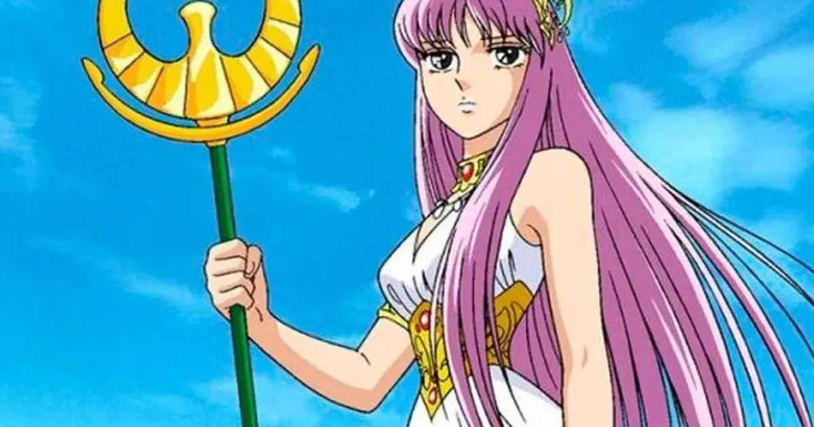
Athena es la deidad central y figura mítica a quien los Caballeros juran lealtad y protección. Representa la sabiduría, justicia y paz en el universo.
Athena, conocida como Saori Kido en su encarnación humana, es la reencarnación terrenal de la diosa Athena. Su misión es proteger y cuidar la paz en la Tierra. Los Caballeros son sus fieles protectores, quienes luchan en su nombre contra aquellos que buscan causar caos y desequilibrio en el mundo.
Athena posee un gran amor y compasión por la humanidad, y su presencia inspira valentía y determinación en sus Caballeros. A menudo se manifiesta en momentos críticos para apoyar a sus guerreros o proporcionarles orientación espiritual.
El principal objetivo de los Caballeros de Athena es defenderla y salvaguardar su integridad, ya que se considera que su bienestar es esencial para el equilibrio y la justicia en el mundo.
Mu de Aries
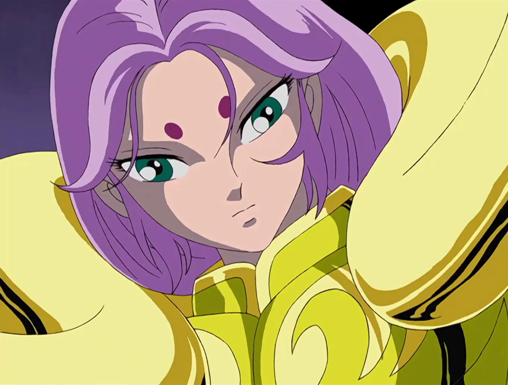
Es el guardián del Templo de Aries y uno de los 12 Caballeros de Oro, cuyo rol es proteger el santuario y a la diosa Athena. Es reconocido por su inteligencia, habilidades excepcionales en combate y por ser uno de los más leales seguidores de la diosa.
Mu es conocido por su personalidad tranquila y compasiva. A menudo actúa como un mentor para los demás caballeros, mostrando sabiduría y paciencia. A pesar de su apariencia serena, en combate es extremadamente poderoso, capaz de utilizar el poder del "Cristal de Aries", una técnica basada en el control del cosmos y la manipulación de la materia.
Aldebaran de Tauro
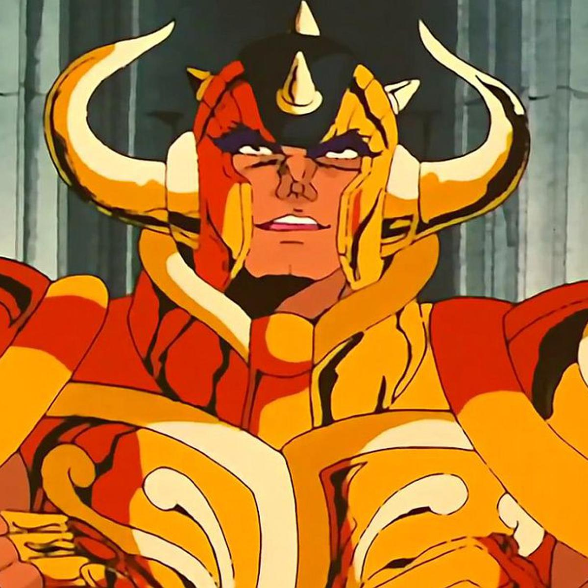
Aldebaran custodia el Templo de Tauro en el Santuario de Athena y, al igual que los otros Caballeros de Oro, dedica su vida a proteger a la diosa Athena y el Santuario de cualquier amenaza.
Aldebaran se destaca por su apariencia imponente y su naturaleza noble. Es conocido por su fuerza colosal y su imponente armadura dorada que simboliza el signo de Tauro. A pesar de su físico imponente y su reputación como un guerrero formidable, Aldebaran es gentil y honorable, mostrando compasión y bondad hacia sus enemigos y aquellos que lo rodean.
Saga de Geminis
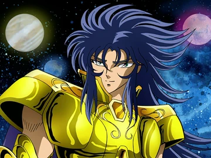
Saga es presentado como el Caballero de Oro y líder del Santuario, además de ser el representante del signo de Géminis. Saga se muestra como una figura respetada y admirada por su sabiduría y poder.
Sin embargo, a medida que avanza la historia, se revela que Saga tiene un lado oscuro: su personalidad está dividida en dos, debido a la maldad del lado maligno y corrupto que reside en él. Este aspecto oscuro es conocido como el "Saga Malvado" o "Saga de Géminis Maligno".
El Saga Malvado se muestra como un villano manipulador y poderoso, capaz de cometer actos terribles en su afán por tomar el control del Santuario y lograr sus propios objetivos. Este aspecto oscuro de Saga es un antagonista clave en la serie, desencadenando conflictos y desafíos para los Caballeros de Athena.
Mascara de la Muerte de Cancer
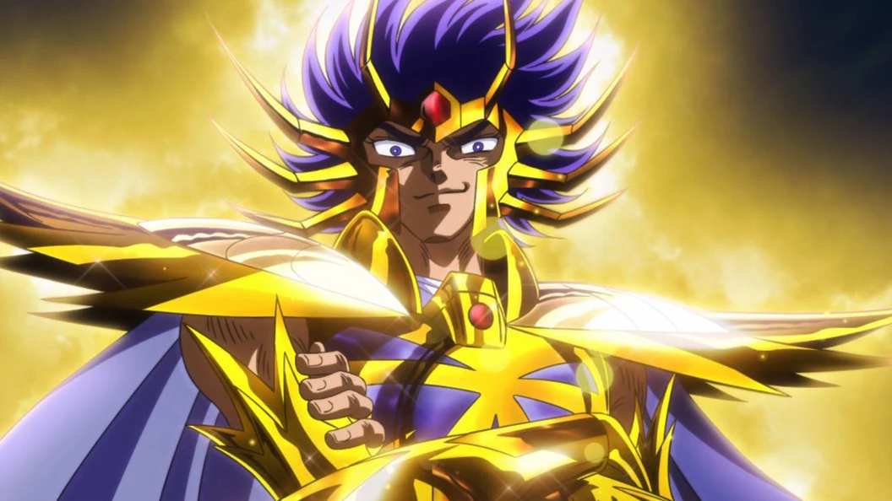
Máscara de la Muerte es reconocido por su apariencia siniestra y su personalidad fría y despiadada. Es el guardián del Templo de Cáncer y uno de los guerreros más poderosos del ejército de Athena.
Su técnica más famosa es la "Ondas del Infierno", la cual utiliza para eliminar a sus oponentes a través de ondas de energía maligna. Es un enemigo formidable y, al igual que otros Caballeros de Oro, posee un fuerte compromiso con la protección del Santuario y la diosa Athena.
Aioria de Leo
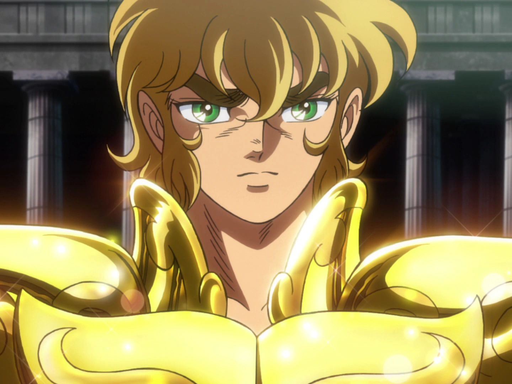
Al principio, Aioria aparece como un antagonista, desafiando a los Caballeros de Bronce en nombre de la diosa Athena. Sin embargo, con el tiempo, se descubre que Aioria está bajo la influencia de una manipulación mental impuesta por el Santuario.
Aioria es un guerrero poderoso y habilidoso, poseedor de una gran fuerza física y una técnica de combate formidable llamada "Relámpago de Plasma", la cual consiste en un ataque eléctrico que se desata a través de su armadura dorada de Leo.
Shaka de Virgo
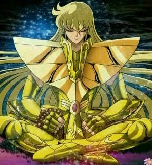
Reconocido por su sabiduría, calma y compasión, Shaka es el guardián del Templo de Virgo y representa la constelación de Virgo.
Entre sus habilidades más destacadas se encuentra el "Tesoro del Cielo", un poder que le permite manipular y controlar la energía cósmica a un nivel muy elevado. Su técnica más poderosa es conocida como "Rendición Divina", un ataque que apela a la destrucción total del enemigo a través de una ráfaga de energía espiritual.
Dokho de Libra
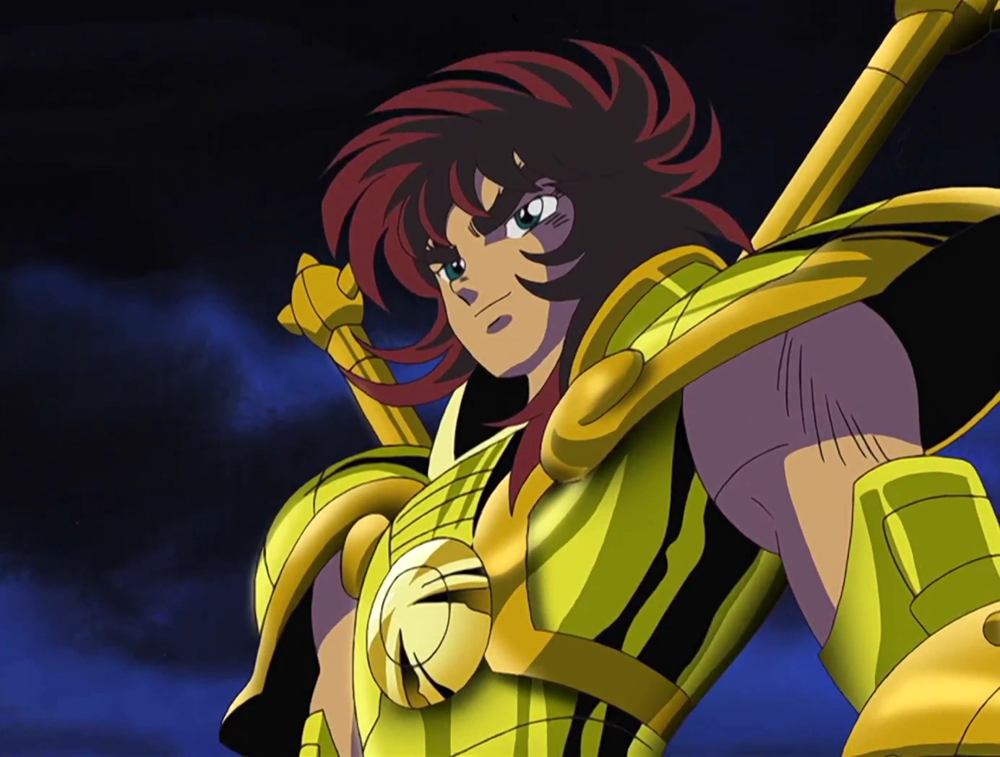
Es uno de los antiguos Caballeros de Oro y el guardián del Templo de Libra en el Santuario.
Dohko es conocido por su calma, paciencia y sabiduría. A pesar de su apariencia avanzada en edad, posee una fuerza increíble y un gran conocimiento de las artes marciales. Además, guarda una conexión especial con el legendario Dragón de Oro, cuyo espíritu reside en la armadura de Libra.
Milo de Escorpio
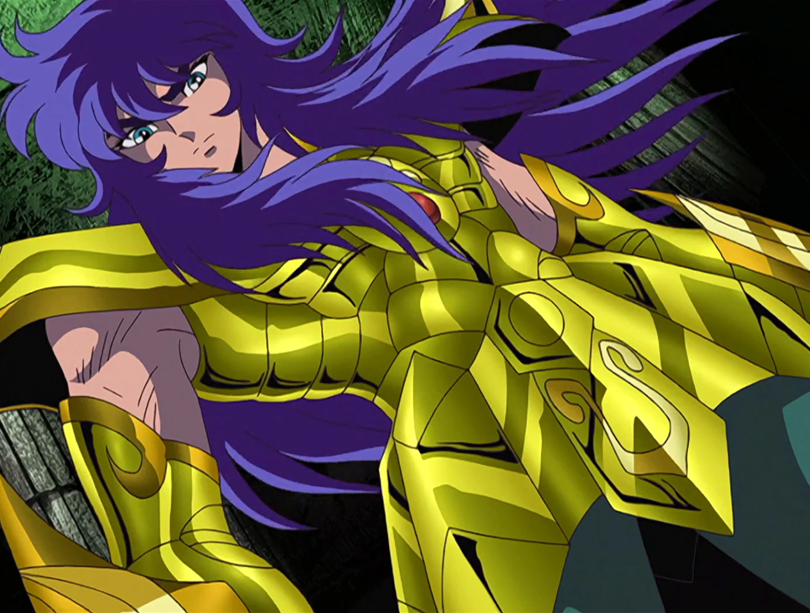
Es el guardián del Templo de Escorpio en el Santuario.
Su personalidad es fuerte y determinada. En la serie, demuestra un carácter apasionado y despiadado al combatir a sus oponentes. Utiliza su técnica "Aguijón Escarlata", un ataque rápido y letal que utiliza la velocidad y la potencia de Escorpio para golpear a sus enemigos.
A pesar de su apariencia feroz en combate, Milo muestra un lado compasivo y leal hacia sus compañeros y hacia Athena. A lo largo de la historia, desempeña un papel crucial en la defensa del Santuario y en la protección de la diosa Athena, enfrentándose a desafíos y enemigos formidables.
Aiolos de Sagitario

Es conocido por su valentía, poder y lealtad a la diosa Athena.
Posee una fuerza y habilidades excepcionales, demostradas especialmente a través de su técnica "Flecha de Oro". Aiolos es reconocido por su nobleza, lealtad y su habilidad sobresaliente en el combate, utilizando su arco y flechas con precisión mortal.
Shura de Capricornio
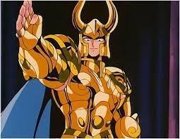
Destaca por su lealtad a la diosa Athena y su increíble fuerza en combate.
Es el guardián del Templo de Capricornio en el Santuario y es conocido por su determinación y honor. En la serie, demuestra habilidades sobresalientes en el combate, siendo uno de los guerreros más fuertes entre los Caballeros de Oro.
Su técnica principal es la "Excalibur", un ataque devastador que utiliza la energía de su cosmos para crear una espada de energía capaz de cortar casi cualquier cosa. La ferocidad y la destreza en el combate de Shura de Capricornio lo convierten en un oponente formidable.
Camus de Acuario
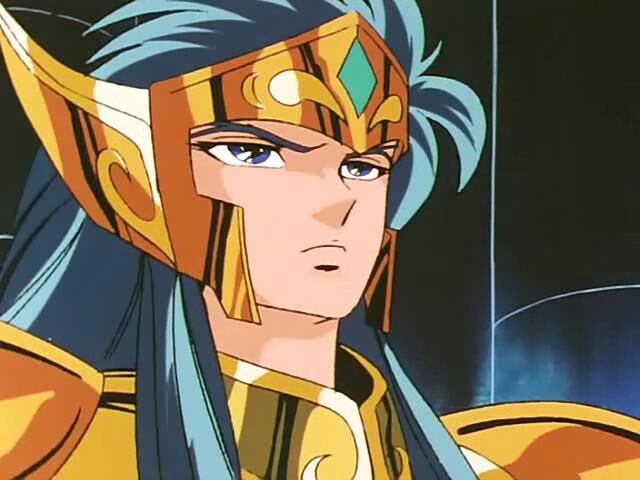
Como Caballero de Oro, Camus es el guardián del Templo de Acuario en el Santuario. Destaca por su dominio sobre el elemento del hielo, siendo conocido por su técnica "Cristal de Hielo", capaz de congelar casi cualquier cosa. A pesar de su poder devastador, demuestra ser un caballero honorable, tranquilo y compasivo.
A lo largo de la serie, Camus actúa como maestro y mentor del protagonista, Hyoga de Cisne, enseñándole las artes del combate y transmitiéndole valiosas lecciones sobre la vida y el cosmos. A pesar de ser un formidable guerrero, su principal preocupación es el bienestar de su discípulo y la protección de Athena.
Afrodita de Piscis
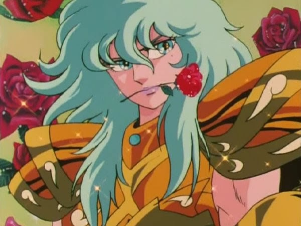
Destaca por su elegancia, poder y letalidad en el combate.
Afrodita es el guardián del Templo de Piscis en el Santuario. Utiliza su técnica "Rosas Diabólicas" como su principal ataque, en el que manipula rosas letales con pétalos afilados, capaces de cortar y herir a sus oponentes.
Aunque su apariencia y actitud puedan transmitir serenidad y refinamiento, en combate muestra una ferocidad impresionante. Se le presenta como un personaje con un gran sentido del honor y la belleza, pero también con una lealtad inquebrantable hacia Athena.